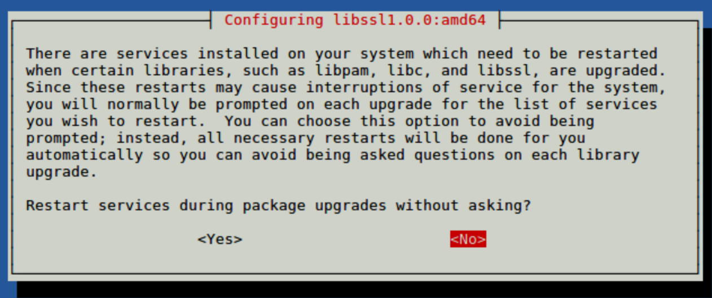
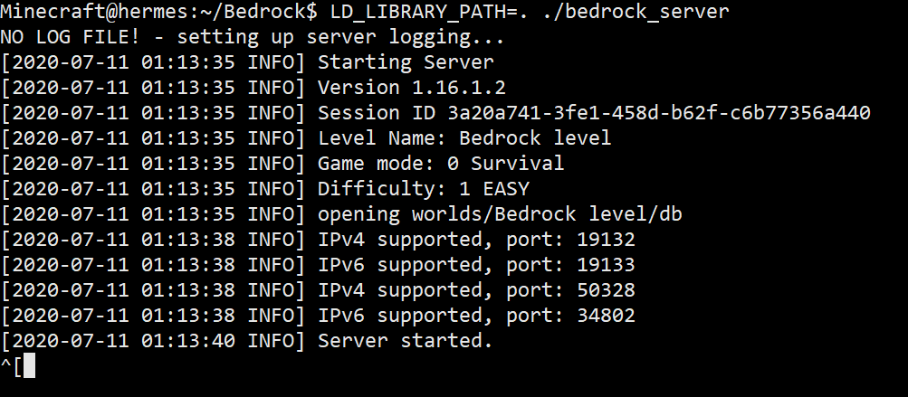
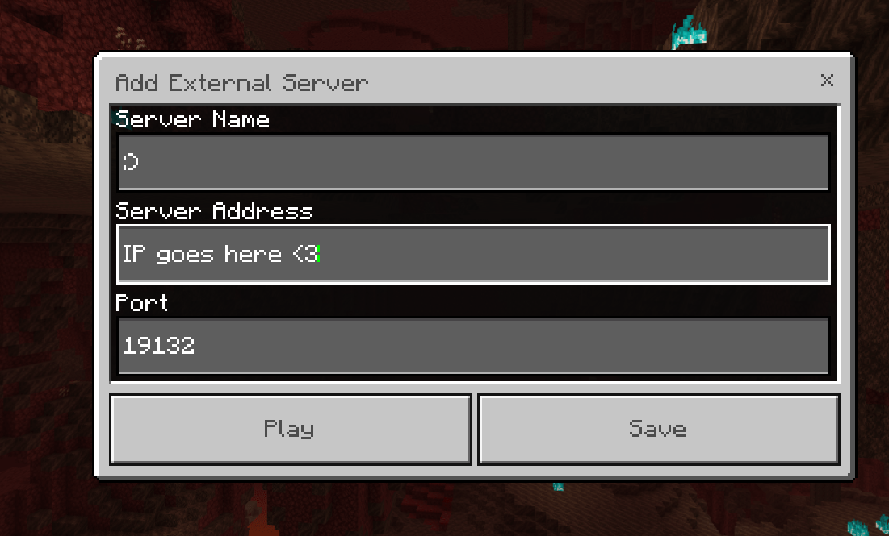
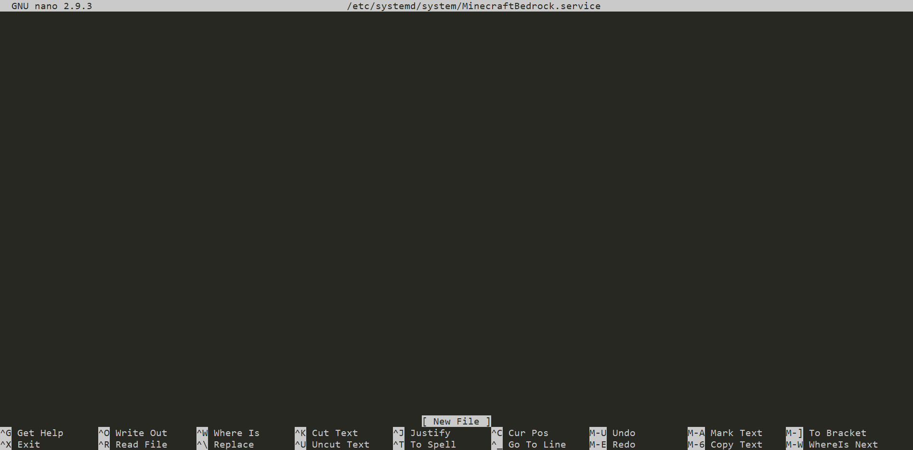
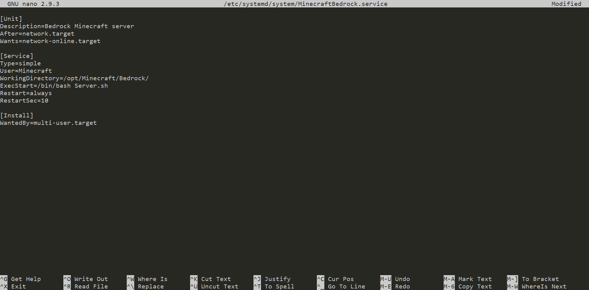

Hosting a Bedrock Server¶
Introduction¶
In this guide, you will be able to host a Bedrock Dedicated Minecraft server as well as keeping it alive without having to be logged in all the time. Before you start, make sure you meet the requirements and have a basic understanding of Linux, if you have issues or are stuck on a step you can ask for help in our support server.
Requirements¶
- You have a Linux VPS (Debian/Ubuntu).
- You are logged in as root or have a user that can use sudo.
- You know how to establish an SSH connection or use an SSH client.
Don't know how to connect to your server? Check out this guide.
Installing required packages¶
I recommend that you should be logged in as root before executing these commands to ensure everything goes smoothly.
apt update && apt upgrade -y
apt install sudo screen unzip curl -y
Warning
You may get a popup like the one below, use the arrow key to click yes to proceed.

Creating a user for Minecraft¶
For security purposes, Minecraft should not be running under the root user. We will create a new system user and group with home directory /opt/minecraft that will run the Minecraft server and install unzip which is needed later.
sudo useradd -r -m -U -d /opt/minecraft -s /bin/bash minecraft
We are not going to set a password for this user. This is a good security practice because this user will not be able to log in via SSH. To login to the Minecraft user, you’ll need to be logged in to the server as root or user with sudo privileges.
Before starting with the installation process, make sure you switch to the Minecraft user.
sudo su - minecraft
Creating the Directory¶
If you plan to have multiple versions of Minecraft running I would recommend creating a folder for them to make sure the files do not conflict.
mkdir bedrock
cd bedrock
Getting the files¶
Download the files required to host the server as well as unzipping them using the command provided below.
wget https://minecraft.azureedge.net/bin-linux/bedrock-server-1.20.15.01.zip -O server.zip
unzip server.zip
rm server.zip
Starting the server¶
Use the command below to start the server, please make sure you are in the same directory as the files are located in.
LD_LIBRARY_PATH=. ./bedrock_server

Connecting to the server¶
You should grab the IP of your server which can be found using the command below if you do not know it.
dig +short myip.opendns.com @resolver1.opendns.com
Note
If the command above fails, try this command and copy the output as that is the IP of your server.
curl icanhazip.com
Copy the IP and open Minecraft up, go to servers and click add a server and under Server Address put the server's IP in and click Done.

Keeping your server alive¶
Screen¶
Screen is one way of keeping your server running in the background without having to keep your SSH session open.
Warning
screen does not boot on load or write logs to the disk automatically, reboots would kill the screen due to only being a virtual session.
To start your server with screen, first, make sure you have screen package installed.
Installation¶
You should've installed screen from the start of the guide. In the eventuality that you do not have screen package installed, please use the command below and make sure you're using root or sudo. You can install screen using the one-liner below:
sudo apt update && sudo apt install screen -y
Warning
Make sure you are using root if you are still on the Minecraft account use exit, then execute the commands after you are done you should use the command listed to switch back to the Minecraft account sudo su - minecraft.
Usage¶
Install the required files.
echo "LD_LIBRARY_PATH=. ./bedrock_server" >> Server.sh | chmod +x Server.sh
You can then start your server by using the command below:
screen -S Bedrock -L ./Server.sh
This should create a session you can safely leave without fear of it shutting down when you leave.
You can leave the screen via CTRL+AD from this session so your Server is still online when you leave.
You can re-attach to the running screen by running screen -r Bedrock and either issue commands or shutdown the server via CTRL+C.
Systemd¶
Systemd can be an easy way of keeping your Minecraft server up, setting a service file for Minecraft should be easy and quick if you follow closely, first you should switch to root for this by running the command below.
Installation¶
exit
Once you are root we will start by creating a service file called minecraft@bedrock.service in /etc/systemd/system/.
nano /etc/systemd/system/minecraft@bedrock.service
Next, a screen like this will show up, you will fill it up with the config provided below.  Use this config.
[Unit]
Description=Bedrock Minecraft server
After=network.target
Wants=network-online.target
[Service]
Type=simple
User=minecraft
WorkingDirectory=/opt/minecraft/bedrock/
ExecStart=/bin/bash Server.sh
Restart=always
RestartSec=10
[Install]
WantedBy=multi-user.target

Hint
To exit out of nano, use Ctrl + X and hit Y
Run the commands below to test and start the server
systemctl daemon-reload
systemctl start minecraft@bedrock.service
systemctl status minecraft@bedrock.service
systemctl enable minecraft@bedrock.service
Usage¶
Here are some commands that will help you effectively manage the service. Start service:
systemctl start minecraft@bedrock.service
Restart service:
systemctl restart minecraft@bedrock.service
Status of service:
systemctl status minecraft@bedrock.service
Stop service:
systemctl stop minecraft@bedrock.service
View logs:
journalctl -n 50 -f -u minecraft@bedrock.service